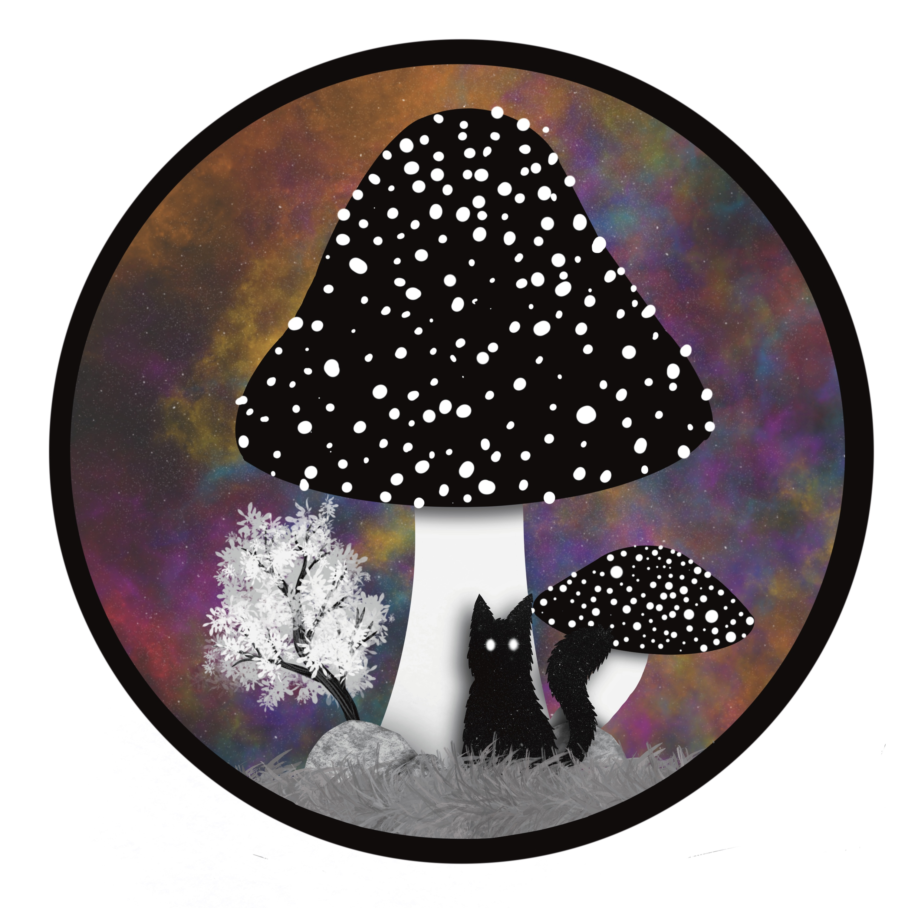

About Me
Since a young age i’ve always loved being creative. As a child, I would paint landscapes using acrylics with my grandmother. After high school, I decided that I wanted to try and make a career with my art, so I started the Graphic Design course at Algonquin College.
I have an energetic five-year-old son named August, and a four-year-old black cat named Gotham. My interests include video games, horror movies, Marvel and DC, and Star Wars.
